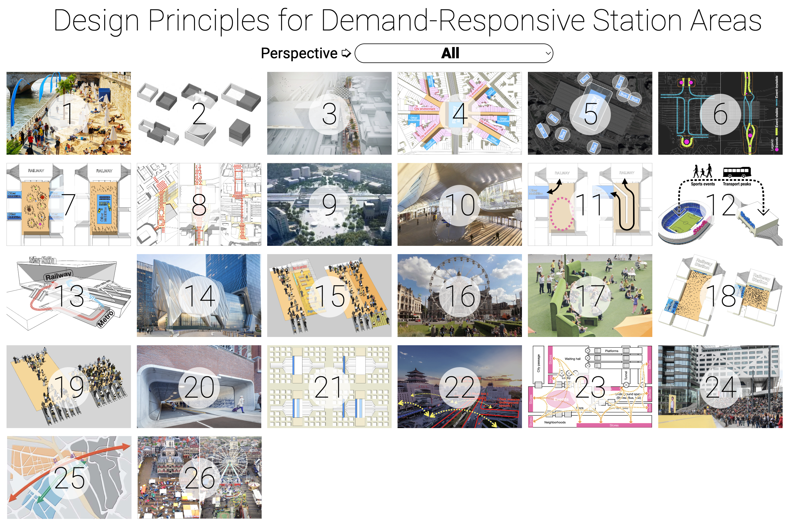

The Repository for Paper 3
This repository contains contents for
Paper 3
(for submission).
The
Main Article
The
full
version
The
brief
version for journal submission
Supplementary Materials
The Website
displaying all the design principles (can be clicked to view from different
perspectives
)
Data Processing
and
Internal Evaluation
tables
Patterns in a Network
Relate Design Principles to an Event Typology
Sources of Images
Other Detailed Description

Comments